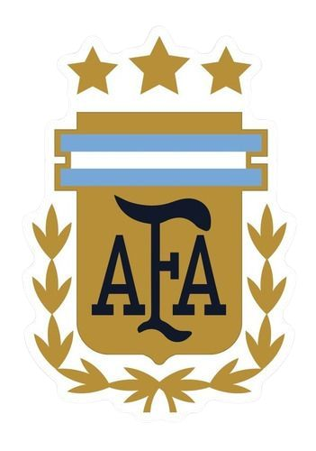
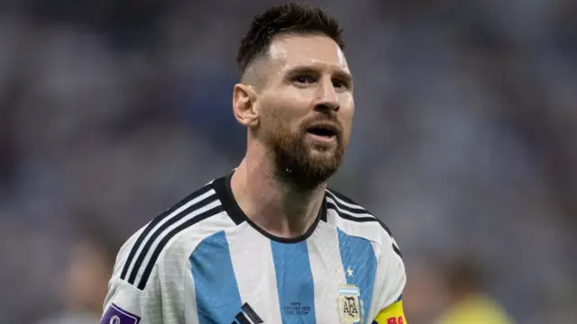

Argentina es una de las selecciones más importantes en la historia de la FIFA World Cup. Ha ganado 3 títulos mundiales: en 1978, 1986 y 2022, consolidándose como una potencia del fútbol internacional.
Grandes figuras como Diego Maradona y Lionel Messi marcaron épocas inolvidables. Maradona brilló en México 1986 con actuaciones históricas, mientras que Messi lideró a la selección campeona en Qatar 2022.
Además de sus títulos, Argentina disputó varias finales mundialistas y protagonizó partidos memorables, como la victoria ante Inglaterra en 1986 y la emocionante final contra Francia en 2022.
La selección argentina es reconocida mundialmente por su talento, pasión y tradición futbolística.

Lionel Messi nació en Rosario, Argentina, en 1987. Desde niño destacó en el fútbol y a los 13 años se mudó a España para jugar en el FC Barcelona, donde se convirtió en una leyenda y ganó muchos títulos. Es considerado uno de los mejores futbolistas de la historia y ha ganado varios Balones de Oro. Con la selección de Argentina logró ganar la Copa América 2021 y el Mundial de Catar 2022. Actualmente juega en el Inter Miami CF.
